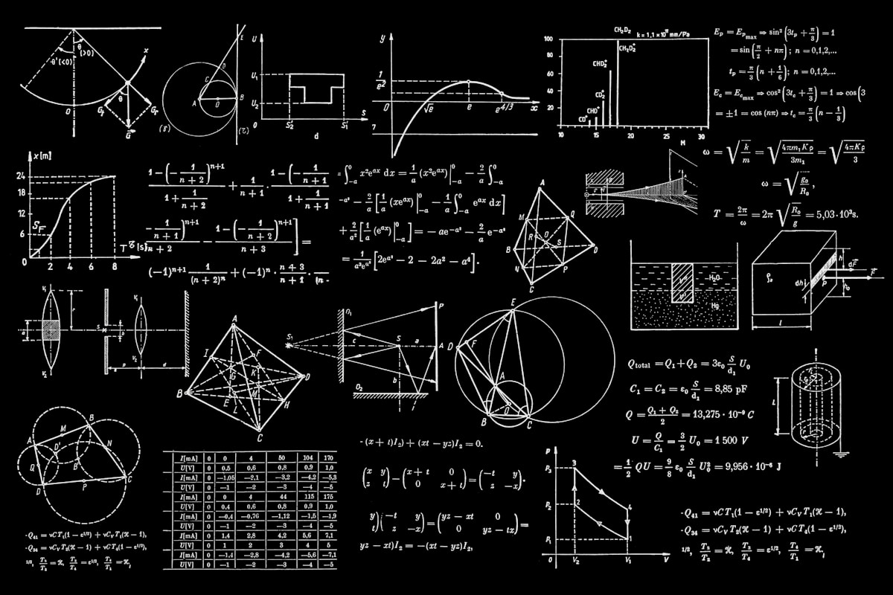

The Infinite Machine: A History of Computing from Gears to Qubits
Tracing the extraordinary journey of human calculation -- from ancient mechanical gears to the quantum processors of tomorrow.
For thousands of years, humanity relied on physical objects to count and calculate. From the simple abacus used in ancient Mesopotamia... to the astronomical gears of the Antikythera mechanism, the quest to automate logic is as old as civilization itself. In the seventeenth century, pioneers like Blaise Pascal and Gottfried Wilhelm Leibniz built mechanical calculators that could add, subtract, and multiply using complex gear trains. Leibniz formulated the binary system -- a logic structure of ones and zeros that would, centuries later, become the language of all digital computing. Yet, these mechanical devices were limited: they could only perform specific tasks and required human intervention at every step.
The true leap toward general-purpose computing came in the nineteenth century, when Charles Babbage conceived the Analytical Engine. Babbage, a brilliant English mathematician, realized that a machine could do more than just compute tables: it could store data, execute instructions sequentially, and make decisions based on logical conditions. His design featured a 'store' for memory, a 'mill' for processing, and a system of punched cards inspired by the Jacquard loom. Although the Analytical Engine was never fully built during Babbage's lifetime due to lack of funding and mechanical precision, it is widely recognized as the first design for a programmable computer.
Babbage was joined by Ada Lovelace, who wrote the first algorithm for the machine, earning her the title of the world's first computer programmer. Lovelace saw that Babbage's engine could manipulate not just numbers, but symbols and music, predicting the digital art forms of the future. The onset of World War Two accelerated computing technology at a breakneck speed. Mechanical gears gave way to electronic components. In Great Britain, Alan Turing and a team of codebreakers built Colossus... a machine that used thermionic valves or vacuum tubes to crack complex German military codes. At the same time, in the United States, John Mauchly and J. Presper Eckert constructed the Electronic Numerical Integrator and Computer, known as ENIAC.
Built at the University of Pennsylvania, ENIAC was a colossal machine, weighing thirty tons and occupying a room thirty by fifty feet. It contained over seventeen thousand vacuum tubes and consumed vast amounts of electricity. ENIAC was a hundred thousand times faster than mechanical calculators... performing five thousand additions per second. However, programming it was an arduous task, requiring engineers to manually re-route hundreds of cables and switches. The ENIAC was programmed by a team of six brilliant women: Kathleen Antonelli, Jean Bartik, Frances Spence, Ruth Teitelbaum, Marlyn Meltzer, and Betty Holberton, who laid the foundation for modern software engineering.
The limitation of manual wiring led to the stored-program architecture, proposed by John von Neumann. This breakthrough allowed both data and instructions to be stored in the same memory space, making it easy to run different programs without altering the physical hardware. At the same time, Grace Hopper developed the first compiler, which translated human-readable programming commands into machine code, and coined the term 'debugging' after removing a real moth from a relay. In nineteen-forty-seven, a revolutionary invention changed everything: the transistor. Developed at Bell Labs by John Bardeen, Walter Brattain, and William Shockley, the transistor replaced delicate, hot, and power-hungry vacuum tubes with solid-state semiconductors.
Transistors were smaller, faster, cheaper, and used a fraction of the electricity. This single invention paved the way for the commercialization of computers, leading to iconic systems like the UNIVAC and IBM's mainframe series. By the late nineteen-fifties, engineers realized they could combine multiple transistors, resistors, and capacitors onto a single piece of silicon. The integrated circuit, or microchip, was co-invented by Jack Kilby and Robert Noyce. This invention sparked an exponential explosion in processing power, famously predicted by Gordon Moore... who observed that the number of transistors on a microchip doubles roughly every two years.
As chips shrank, computers shrank with them. The legendary Apollo Guidance Computer, which navigated astronauts to the moon in nineteen-sixty-nine, was one of the first systems to use integrated circuits. Soon after, companies like Intel introduced the microprocessor... putting an entire central processing unit on a single silicon chip. The microprocessor made computing accessible to individuals. In the nineteen-seventies, hobbyist clubs and early innovators began building personal computers. The MITS Altair, the Apple One, and the IBM PC brought digital logic out of corporations and into living rooms. Alongside hardware, software became a massive industry, led by companies like Microsoft and Apple.
But the ultimate expansion of computing occurred in the late twentieth century with the creation of the internet. Originally a military research project called ARPANET, the internet evolved into a global network. When Tim Berners-Lee invented the World Wide Web in nineteen-eighty-nine, it transformed computers from mere calculating boxes into communication portals, connecting billions of people. The introduction of early web browsers like Mosaic and Netscape Navigator democratized the internet, triggering the dot-com boom and bringing digital connectivity to every corner of the globe. This was the start of the modern information age.
The twenty-first century shifted computing from desks to pockets. The launch of smartphones combined telephone, computer, and internet into a single device. At the same time, the rise of cloud computing centralized massive processing power in global datacenters, allowing low-power devices to access supercomputing capabilities over the network. We transitioned from local execution to distributed services. Mobile operating systems like iOS and Android turned pocket-sized devices into gateways to the collective knowledge of humanity, completely changing how we work, socialize, and navigate our daily lives.
Today, we are reaching the physical limits of silicon. As transistors shrink to the size of a few atoms, quantum tunneling causes data corruption. To go further, we must rewrite the rules of physics. Quantum computers use superposition and entanglement to calculate at speeds unimaginable with classical hardware. We are standing on the cusp of a computing paradigm that will redefine security, medicine, and human intelligence. The journey of calculation, which began with wooden beads in the sand, is now entering the quantum realm... unlocking the code of the universe.
In the next few decades, as quantum processors mature, they will tackle computational hurdles that are currently impossible -- like modeling complex chemical reactions for carbon capture, or simulating molecular bonds to design custom therapeutics on demand. This represents not just an incremental step in technology, but a fundamental shift in how humanity interacts with information. We are moving from a paradigm of dry calculations to a model of quantum simulation. The boundaries between digital logic and physical reality are beginning to blur, opening up fields of research that were once considered pure science fiction.
To understand the magnitude of this shift, we must look at the quantum bit, or qubit. In classical computing, a bit is like a light switch, either off or on, representing zero or one. A qubit, however, is more like a spinning coin. While it spins, it exists in a state of superposition -- representing both zero and one at the same time, in varying probabilities. This allows a quantum system to explore an astronomical number of paths simultaneously, resolving complex optimization problems in seconds that would otherwise take classical machines millions of years.
Furthermore, quantum entanglement links qubits in a way that classical physics cannot explain. If two qubits are entangled, the state of one instantly dictates the state of the other, regardless of the physical distance between them. This allows quantum networks to transmit data with absolute cryptographic security, as any attempt to intercept the signal would collapse the quantum state and alert the users. We are on the threshold of building a secure, global quantum internet that is completely immune to traditional hacking methods.
Of course, building these machines is one of the most difficult engineering challenges in human history. To remain stable, superconducting qubits must be kept at temperatures just a fraction of a degree above absolute zero. This requires massive dilution refrigerators that resemble elaborate golden chandeliers, shields of mu-metal to block electromagnetic interference, and sophisticated laser systems to control the qubits. The slightest disturbance from the environment, known as noise, can cause qubits to lose their quantum state, a process called decoherence.
To solve this, researchers are developing topological qubits and complex quantum error-correction algorithms, which use thousands of physical qubits to create a single, error-free logical qubit. The progress is slow, but it is accelerating. The legacy of Babbage, Lovelace, Turing, and Von Neumann is alive in every qubit, and the machines we build next will be the tools we use to navigate the unknown depths of the future. The infinite machine is no longer a dream... it is slowly becoming a reality.